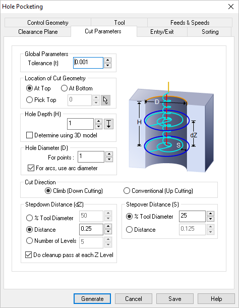
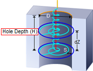
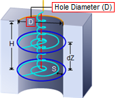
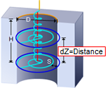
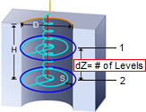
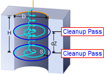
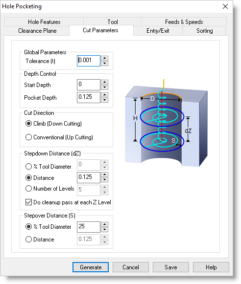

The following Cut Parameters tab allows you to define the roughing parameters for the current 2½ Axis Hole Pocketing operation. You can set Global Parameters, Cut Geometry parameters, Cut Direction and the Stepover and Stepdown Control via this tab of the operation dialog. The Global Parameters section allows you to set the tolerance value to be used in machining. Refer to each option below.
 Dialog Box: 2½ Axis Hole Pocketing |
The Global Parameters section allows you to set the tolerance value to be used in machining. •Tolerance
|

The Location of Cut Geometry can be set to At Top (top Z level), At Bottom (bottom Z level) or Pick Top (specifying the Z location) by entering a Z value location or by selecting the pick
|


Dole Depth (H) Enter the Hole Depth (H) for the hole pocket operation. It is calculated from the location of the cut geometry selection.  Hole Depth (H) Hole Diameter (D) If points were selected as your control geometry, specify Hole Diameter (D) for the Hole Pocket as shown in the illustration below.  Hole Diameter (D) |
Select Climb (Down Cut) and the tool will be maintained in a downward motion into the stock. ") Climb (Down Cut) Select Conventional (Up Cut) and the direction of the tool will be maintained in an upward motion out of the stock. ") Conventional (Up Cut)
|
 One of the basic concepts to understand in any milling operation is
One of the basic concepts to understand in any milling operation is This defines the spacing at different levels of the cut. Select from one of the following options: This allows you to set the Stepdown Control (Dz) distance for the current operation as a percentage of the active tool selected for the operation. Select % Tool Diameter and then enter the percentage value in the field provided.  Stepdown % Tool Diameter You want to specify the exact Stepdown Control (Dz) for the Hole Pocket. Enter the stepdown in the Distance field provided.  Stepdown dZ=Distance Control the Stepdown Control (dZ) distance by entering the total Number of Levels in the field provided. The distance between cut levels will be calculated for you.  Stepdown dZ=# of Levels Check this box to automatically insert a corner Cleanup Pass at each Z Level cut. These are the arc motions shown in blue in the figure below.  Cleanup at Each Cut Level |
This defines the spacing between the cuts. Select from one of the following options: This allows you to set the stepover distance for the current operation as a percentage of the active tool diameter.  % Tool Diameter Specify the stepover for the current operation as an exact Distance and then enter the distance value in the field provided. Distance |
 Cut Parameters tab - 2½ Axis Hole Pocketing (from a Hole Feature) |
The Global Parameters section allows you to set the tolerance value to be used in machining. •Tolerance |
Start Depth This allow you to specify a Start Depth that is different than that of the Hole Feature this operation is being derived from. The cut will begin at this Z value location. Pocket Depth / Hole Depth (H) Enter the Hole Depth (H) for the hole pocket operation. It is calculated from the location of the cut geometry selection. Hole Depth (H) |
Select Climb (Down Cut) and the tool will be maintained in a downward motion into the stock. Climb (Down Cut) Select Conventional (Up Cut) and the direction of the tool will be maintained in an upward motion out of the stock. Conventional (Up Cut)
|
This defines the spacing at different levels of the cut. Select from one of the following options: This allows you to set the Stepdown Control (Dz) distance for the current operation as a percentage of the active tool selected for the operation. Select % Tool Diameter and then enter the percentage value in the field provided. Stepdown % Tool Diameter You want to specify the exact Stepdown Control (Dz) for the Hole Pocket. Enter the stepdown in the Distance field provided. Stepdown dZ=Distance Control the Stepdown Control (dZ) distance by entering the total Number of Levels in the field provided. The distance between cut levels will be calculated for you. Stepdown dZ=# of Levels Check this box to automatically insert a corner Cleanup Pass at each Z Level cut. These are the arc motions shown in blue in the figure below. Cleanup at Each Cut Level |
This defines the spacing between the cuts. Select from one of the following options: This allows you to set the stepover distance for the current operation as a percentage of the active tool diameter. % Tool Diameter Specify the stepover for the current operation as an exact Distance and then enter the distance value in the field provided. Distance
|